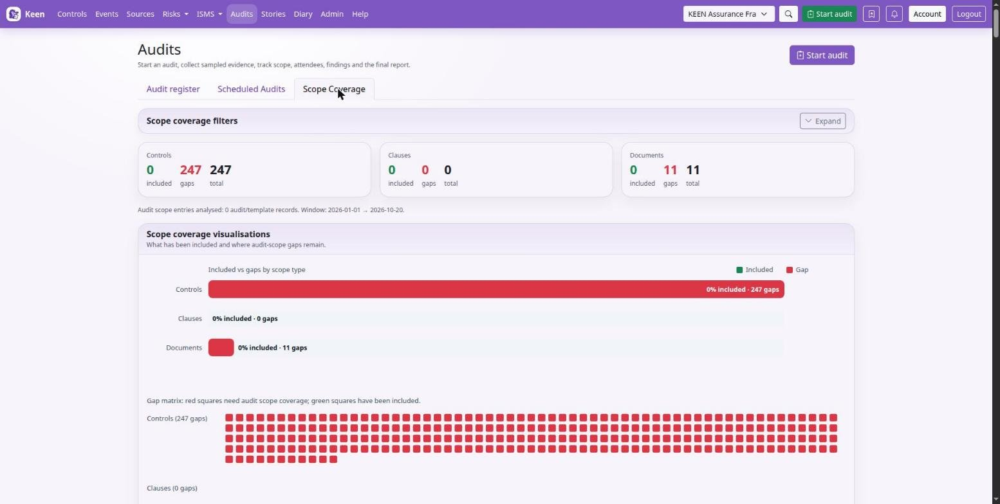
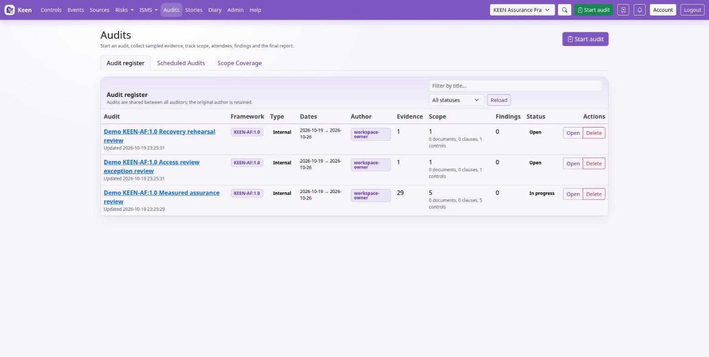
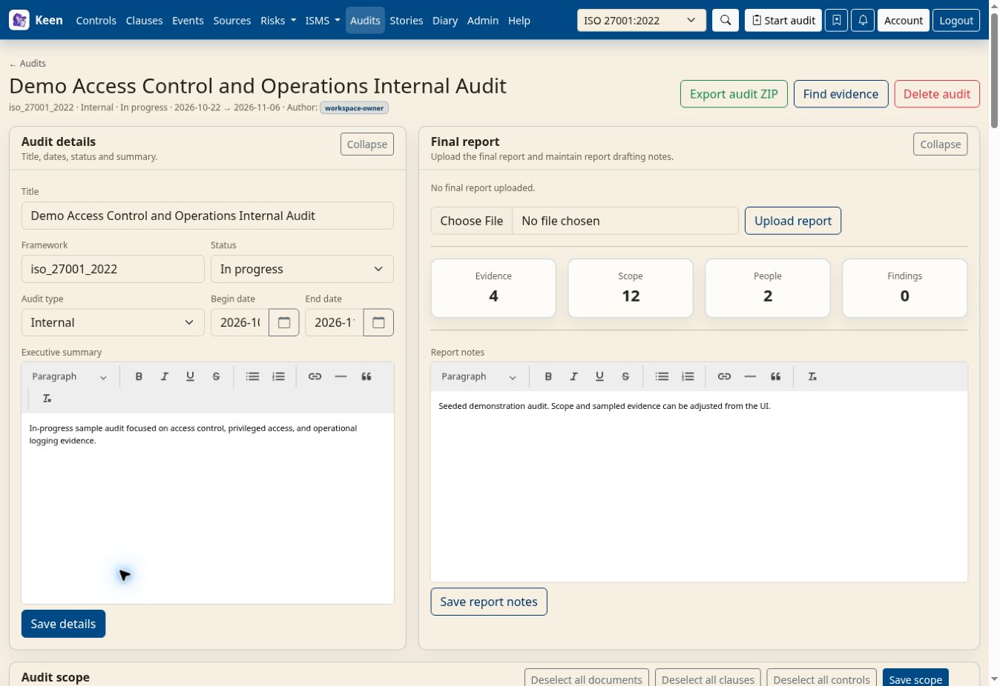
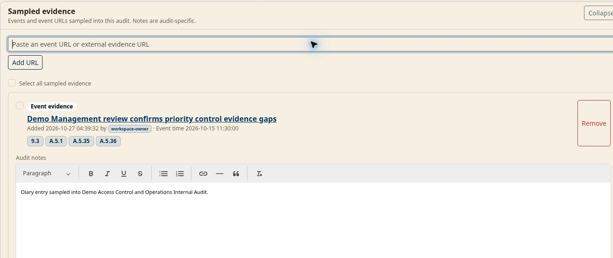
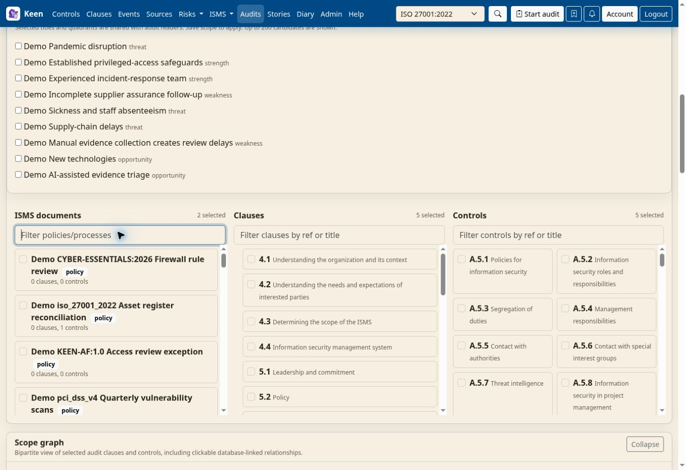
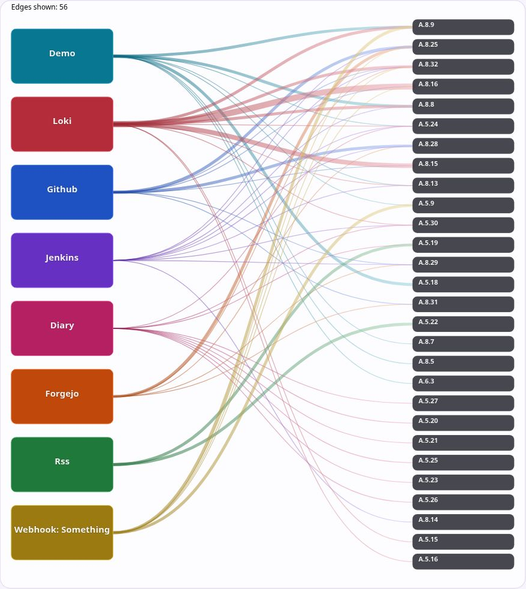

Using KEEN
Plan audits and sample evidence
Chapter 13 of 16
Plan audits and sample evidence
An audit in KEEN is a container for one review: its scope, the people involved, the evidence you examined, your findings and the report. This chapter walks one audit from start to completion, then covers scheduled audits and the coverage views that tell you what has not been looked at lately.
- Scope
- The controls, clauses and documents the audit sets out to examine. A statement of intent.
- Sample
- A record you actually examined: an event, a risk, a document, a measure and so on.
- Finding
- The result of your assessment of a requirement against the samples.
audits.manage lets you create audits and scheduled templates and run or edit the ones you created. audits.admin also edits other people’s audits and deletes audits or templates. Sampling evidence also needs read access to the underlying event or record, for administrators too.


Plan and conduct audits


In Audits, create an audit with a clear scope, framework, dates and participants. Add the controls and clauses in scope, then sample the evidence, risks and other records you examine. For each sample, say why you chose it and what it demonstrates, and include adverse evidence as well as favourable where a balanced conclusion needs it.
Record findings with enough detail to identify the requirement, the observed facts and the necessary action. Keep the notes and executive summary current, review the whole audit, and only then complete it: a completed audit restricts further changes.
Scheduled audits create audit records through the background scheduler, and coverage views show which requirements have not been examined recently. Both are covered later in this chapter.
Plan and conduct an audit
- Open Audits → Start audit. The audit belongs to the framework selected in the top navigation, so switch that first if you mean another one. Supply the title, audit type, begin and end dates, and report notes explaining the purpose and boundaries. The executive summary can wait.
- Select the ISMS documents, clauses and controls in scope. Use the filters to find them and check the saved scope.
- Open the audit and add participants, preferably from the Person directory. Record each person’s role and check names and contact details before any invitations go out.
- From an event or other supported record, use its sampling action to add it to the audit. Explain the selection and your assessment in the notes.
- Compare each requirement with the sampled facts and add findings with the requirement, observation and needed action.
- Maintain the Report Notes and Executive Summary. Attach an external report with Upload report or add supporting URLs.
- Use Export audit ZIP and read the export. When you are satisfied that scope, participants, samples and findings hang together, complete the audit.


Keep the three ideas apart. A linked control is a scope statement, a sample is the material you examined, and a finding is your assessment. Choose samples that cover the important requirements and the relevant period.
Select evidence and finish an audit
Use Open while preparing an audit and In progress while conducting it. Scope says what you plan to cover; samples record what you examined and what you found.


Choose the material to sample
On an evidence event or another supported record, choose Sample into audit, pick the audit and add a title and notes: why this sample, which requirement, what you observed. Sampling the same record again updates its existing sample. Removing a sample only removes its association with the audit; the event or record itself is untouched.


You can sample evidence events, risks, PESTLE(E) items, interested parties, objectives, documents, BookStack policy snapshots, organisation-chart nodes, assets, access-matrix rows, application-configuration rows, meeting minutes, effectiveness measures, individual metric entries and stories. An audit also accepts supporting URL evidence. For context and response reviews, include SWOT items in scope and sample them.
Going deeper: samples are references
Most sampled ISMS records are references to a record that can change after sampling. When you need a point-in-time record, keep the applicable native document version or a captured artefact. A BookStack policy snapshot carries its own captured revision and checksum and is sampled under its target framework.
Record findings and conclusions
A finding is a Major Non-Conformity, Minor Non-Conformity, Opportunity for Improvement or Best Practice. Give it a title and description, optionally a control, and keep its status as Open, Accepted or Closed. Write the requirement, the sampled observation and the conclusion so another reviewer can follow the reasoning.
Maintain the report notes and executive summary, add supporting links and upload the final report (up to 100 MiB). Review participants, scope, samples and findings before completion; Completed and Archived audits restrict edits.
Going deeper: what the ZIP export contains
Export audit ZIP renders the audit page as a PDF, includes the uploaded final report when present, and downloads the attachments of sampled evidence events. Linked external content and other ISMS records are not captured; include them separately when the export needs them. Inspect the export, including any configured masking and PDF footer, before distributing it.
Schedule the next audit
Scheduled Audits holds templates that create ordinary Open audits. A template chooses an exact date, the first weekday of a month or the first named Monday–Friday, and recurs once, weekly, monthly, quarterly or yearly with an interval and optional end. Keep scope and attendees on the template; selected documents can contribute their linked clauses and controls when an occurrence is created.
Going deeper: timing and dependencies
Month-based first-weekday rules cannot be combined with weekly recurrence. Date-only scheduling uses the server’s KEEN_TIMEZONE, and the administrator sets how many days ahead occurrences are created. The worker and scheduler must be running for creation to happen, and configured mail delivers notifications and calendar information; verify delivery after saving a template. An occurrence that already exists is a separate audit record, so review it when you change its template.
Schedule recurring audits and check coverage
- Open Audits → Scheduled Audits. Enter the title, audit type and planning notes; the schedule belongs to the framework selected in the top navigation.
- Choose the date rule and its first run date, or the first-weekday month and year fields the rule offers. Check the date against the working days of that month.
- Set the end date or duration, the recurrence, the interval and an Until date where appropriate.
- Select the policies and processes in scope, add attendees with name, account, e-mail and role, and save. Check the template’s calendar placement.
- Before the date, confirm the audit record was created; creation happens within the configured lead time (
KEEN_SCHEDULED_AUDIT_CREATE_DAYS_AHEAD). - Open the created audit and review its scope and participants. A later template change does not rewrite an existing occurrence.
If an occurrence is missing, ask the administrator to check the scheduling logs and look-ahead window before creating a manual audit, so you avoid duplicates.
In Scope Coverage, choose the audit source, date range and filters to see which controls, clauses and documents have been included in audits, and follow the links back to those audits. Use the gaps to plan coverage, then judge sample sufficiency and findings for each requirement.
Read the evidence visualisations
Open Controls → Visualisations to explore source-to-control graphs, heatmaps and a control sunburst. Graph edges show mapped-event relationships; Break sources down by splits a source into its connections, systems, actors, actions or outcomes. In the sunburst, inner segments are controls and outer segments the sources contributing to them: click an inner segment to zoom in, an outer segment to open the filtered events, and the centre to zoom out.

Use the coverage views to find controls without evidence for the selected period, and Audits → Scope Coverage for requirements and documents still outside audit scope in the chosen window. Read evidence quality and findings alongside the counts.